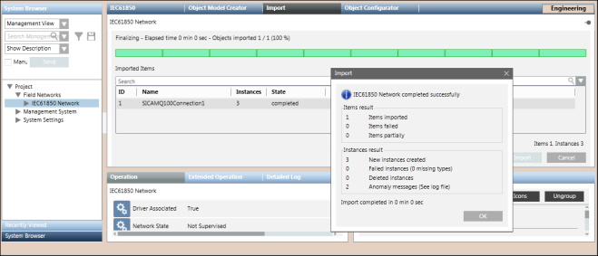

Import IEC61850 Power Meters to the Management Station
- No background processes, such as project backup or BACnet discovery, are in progress.
- [To add IEC61850 power meters below a logical or user defined view] You have mapped the hierarchies of the logical or user defined view in the Hierarchies Mapping section (See IEC61850 Device Importer Workspace in Device Integration Workspace).
- In System Browser, select Management View.
- Select Project > Field Networks > [IEC61850 Network].
- Select the Import tab.
- Click Browse.
- The File Open dialog box displays.
- Select the CSV file and click OK.
- The CSV file is pre-processed and validated. If the file is valid and has all the required parameters, the entries in the file are listed in the Source Items list. In case of any discrepancies, an error message displays in the Preimport File Log dialog box. You can access this dialog box by clicking Analysis Log.
- Select the items to import from the list of items displayed in the Source Items list. If the list of items is long, you can filter the items by using the Search field. Once you have your list of filtered items, you can remove the applied filter by deleting the text.
NOTE: If after selecting a file to import, you decide to change your selection, a message box displays and informs you that selecting another file will clear all items that are displayed in the Source Items list and confirms if you want to proceed. Click Yes if you want to continue. The Source Items list is cleared. - Click No to abort the change of selection. The Source Items list is not cleared.
- Click
 to import.
to import. - The selected items are transferred to the Items to Import list.
NOTE: To return the items from the Items to Import list to the Source Items list, click .
. - (Optional) Select the Delete unselected items from the views option only if, during the import, you want to remove from the views any items that are not present in the file to import. For example, you can use this option when there is some pre-existing data in the system for that view, but you do not want to retain it.
- Click Import.
- A confirmation message displays asking if you want to import the selected items.
- Click Yes.
- The import procedure begins and a progress bar displays.
- When the import completes successfully, the Import dialog box displays a summary of the import information.

- Click OK.
- (Optional) Click the Import Log button to view a log of the import process.